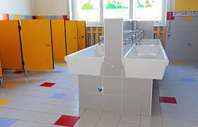

The reason,according to me,Dps can't become the best school in India is because of,well the bathrooms!
The bathrooms in the junior block and the senior block 1st floor is very dirty. Those are the only
bathrooms I've seen in the school. Who knows what the the others bathrooms are like!Also some of
the teachers are waaaaaaaaay too strict.
This is what I want toilets to look like:
